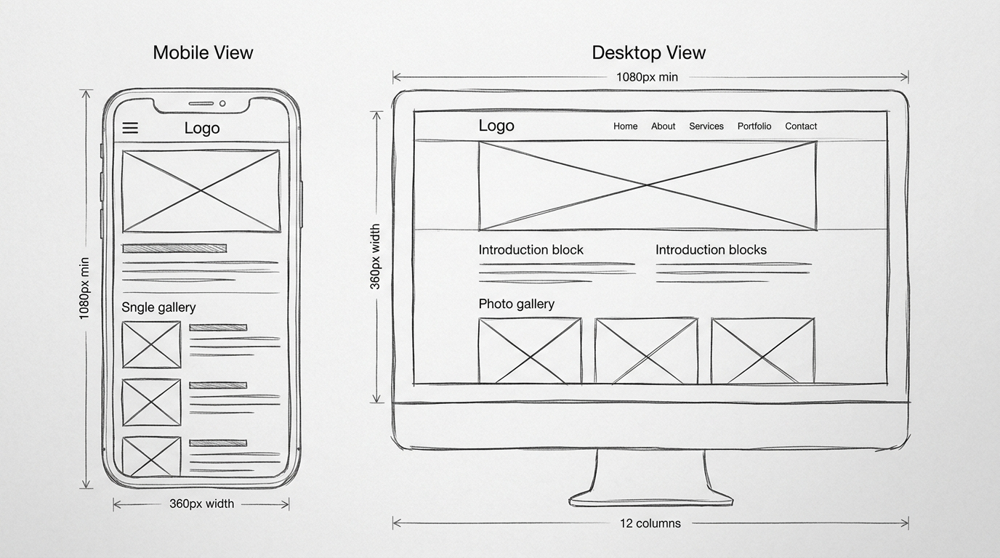

1. Site Concept & Objective
The planned website is a responsive travel and landscape showcase portfolio. The site is structured to deliver an immersive visual narrative of natural destinations, allowing visitors to easily discover locations, read contextual details, and view photo galleries across any device.
2. Mobile View Design (360px - 768px Viewport)
The mobile layout utilizes a mobile-first, single-column vertical flow optimized for touch navigation:
- Header: Minimalist brand header with a compact logo and a collapsible hamburger navigation icon to preserve valuable vertical screen space.
- Hero Section: Proportional hero container framed with an image placeholder box and brief introductory heading.
- Introduction: Vertically stacked paragraphs with comfortable font sizing and line height for single-hand readability.
- Photo Gallery: Linear 1-column card layout where each card pairs an image thumbnail with its descriptive title and summary, preventing horizontal overflow.
3. Desktop / Large Screen View Design (1080px+ Viewport)
On wider desktop displays, the layout expands to make efficient, balanced use of screen width without sacrificing readability:
- Header & Navigation: Fully expanded horizontal navigation bar displaying clear primary links (Home, About, Services, Portfolio, Contact) positioned opposite the brand logo.
- Hero Banner: Wide widescreen panoramic banner serving as the primary visual anchor.
- Content Structure: Introduction blocks adjust into a clean two-column grid, preventing line lengths from exceeding the 60-75 character optimal readability threshold.
- Photo Gallery: Responsive 3-column CSS Grid gallery displaying destination cards side-by-side with balanced margins and padding.
4. Responsive Strategy & Accessibility
The transition between views is achieved using CSS Media Queries (breakpoints at 768px and 1024px) without relying on rigid fixed widths. All interactive elements satisfy touch target guidelines (>44px), and the wireframe deliberately maintains a low-fidelity grayscale design to focus strictly on information architecture, hierarchy, and spatial relationships before introducing styling and color.